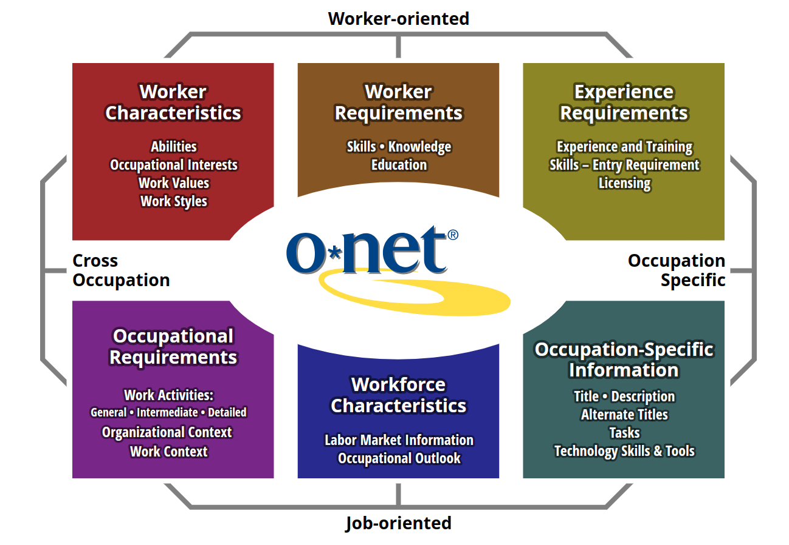
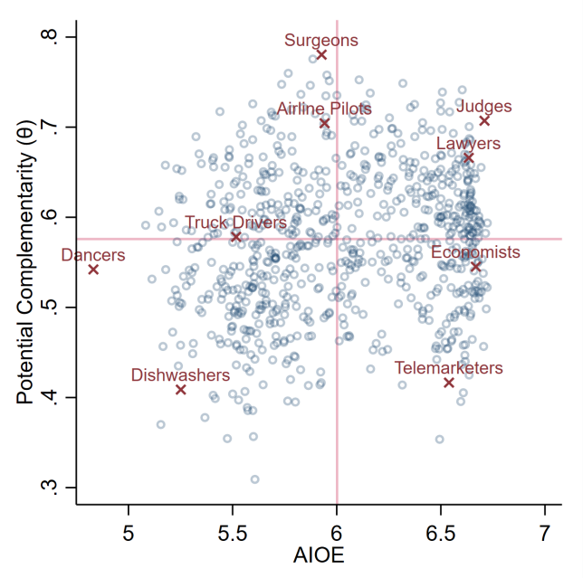
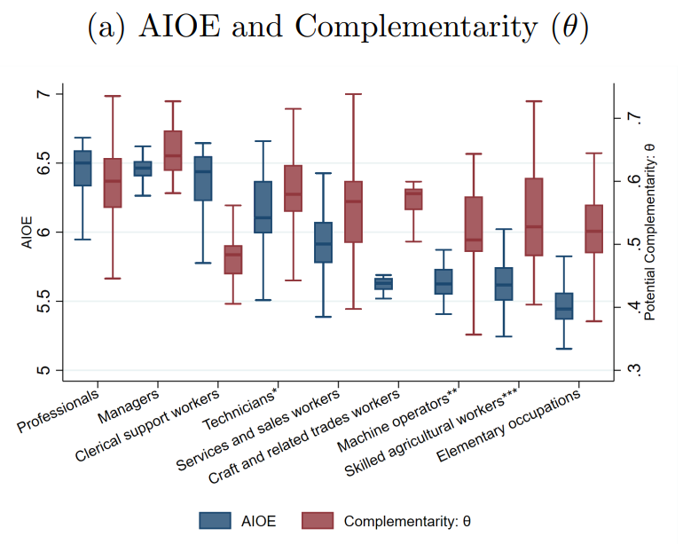
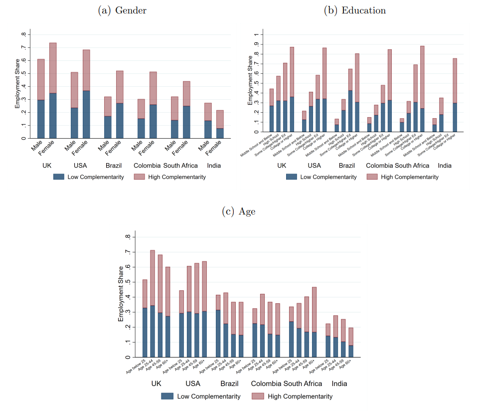
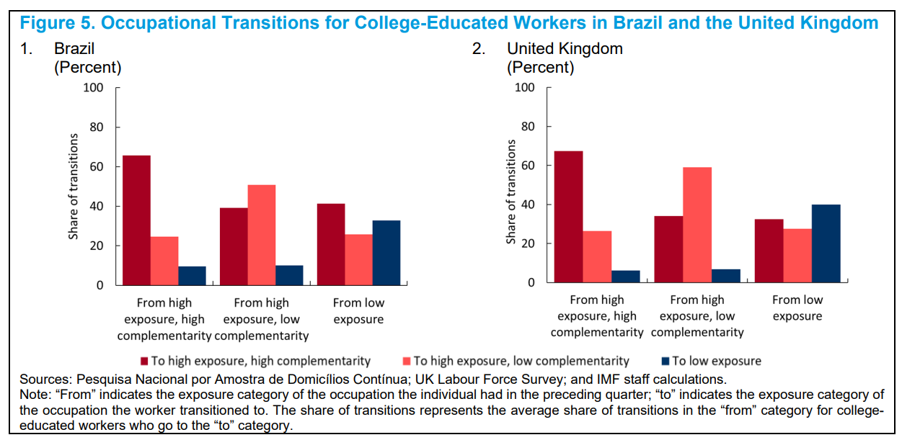
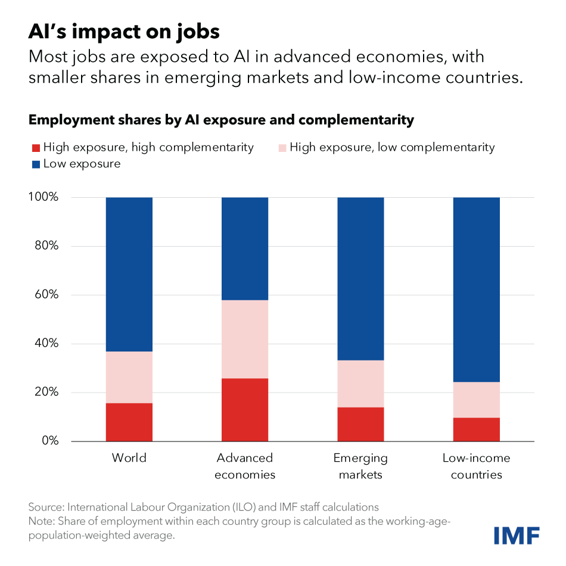
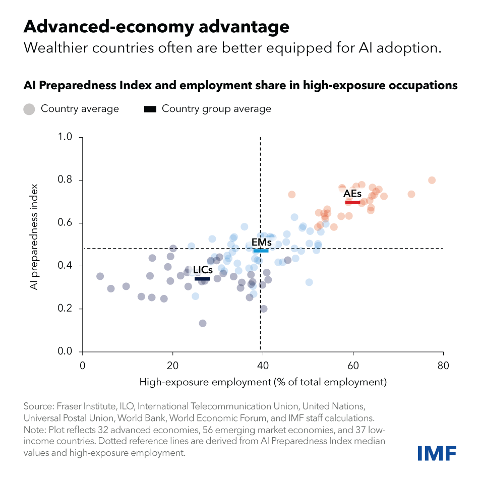
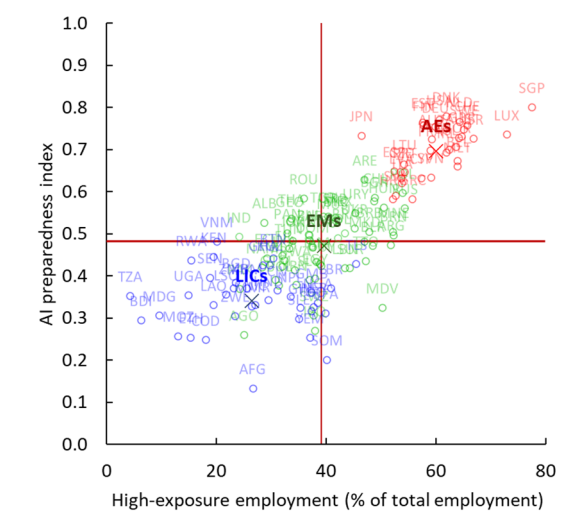

flowchart LR
A{Staff} --> A1[Academic Paper]
A1 --> X[Peer Reviewed Publications]
A1 --> B[IMF Working Paper]
A --> C[IMF Staff Discussion Paper]
B --> C
C --> D[Board Official Position]
E{Member States} ==> D
Gen-AI and the Labour Market
Topics in Economics, ESCP, 2023-2024
. . .
From CNN: ‘Jobs may disappear’: Nearly 40% of global employment could be disrupted by AI, IMF says
. . .
🤔 How do they know that?
. . .
Check out the documents
Introduction
IMF & AI: a recent stream of activity
- Blog Post. written by Kristalina Goeorgieva Head of IMF
- Staff Discussion Note: by Cazzaniga et al. validated by Pierre-Olivier Gourinchas, Head of Research
- IMF Working Paper: Labor Market Exposure to AI: Cross-country Differences and Distributional Implications by Pizzinelli et al.
. . .
Blog also points to:
Many other references in the SDN.
How Research is done at IMF
How does it impact what you read?
Research in Big Institutions
The publication of research papers in big international institutions has several goals:
- disseminate research
- usually from researchers that are closest to policy circles
- build a common narrative that countries can build on to negotiate with the same language
- provide a discussion forum when there isn’t one
- (usually not) state an official position of the institution
Example of Shaping the Narrative
Bank of England, communicates on forward guidance:
- Delphic vs Odyssean forward guidance
. . .
Andy Haldane, chief economist:
. . . Then why is it interested in AI?
. . .
Check out the webpage
Why is IMF interested in AI?
- IMF lends in times of crisis
- it is useful to know what might cause the next one (CoVid2, AI, food shortage, global warning…)
- It pushes for structural reforms (but which ones?)
- so that countries can reimburse loans
- It sometimes acts as a last-resort multilateral institution
- where do all finance ministers sit down to discuss …?
What is it exactly that you do? Can AI do your job?

O*NET
Conceptual framework: O*NET content model
- an occupation (a job) is associated with a particular content (skills, abilities, tasks, activities, context)
- some content relates to the worker, some to the nature of the occupation
- data comes from incumbents and experts
How can you measure AI fitness for a job?
Which content is more relevant to judge AI fitness?
- skills
- abilities
- tasks
A growing body of literature (led by Autor, Levy, Murnane 2003) is using the content of jobs to assess the potential effect of new technologies.
Earlier work has focused on tasks
Earlier work has focused on tasks.
- … for automation
- … for machine learning
Example
What Can Machines Learn and What Does It Mean for Occupations and the Economy?, 2018 Erik Brynjolfsson, Tom Mitchell, and Daniel Rock
From O*NET database (occupational information)
- 964 occupations ,decomposed 18,156 tasks
- Tasks aggregated into of 2,069 work activities
- ex: sort information, show empathy
Use human judgment to measure the suitability for machine learning of each task.
Human Judgment
. . .
In practice, human judgment is replaced with Amazon Turk or CrowdFlower
Example: Result (1)

Example: Result (2)

Examples: Conclusions
Results from from Brynjolfsson et al., 2018:
Almost no
- fully replaceable occupation
- fully ML immune occupation
All the distribution of income is exposed.
The results are typical from the literature on the future of work.
Abilities
IMF Paper looks at abilities
Paper builds on Occupational, industry, and geographic exposure to artificial intelligence: A novel dataset and its potential uses, by Felten, Raj, and Seamans 2021.
Main idea: try to assess the adequacy of AI for each ability.
Construct AI suitability index
AI exposure of ability \(k\):
\[ AIEO_k = \sum_j L_{kj} AI_j \]
where:
- \(L_{kj}\): ability content of task \(k\)
- \(AI_j\): suitability of task \(j\) for ability \(j\)
. . .
How do we measure AI abilities?
The Electronic Frontier Foundation (EFF) is a well-regarded digital rights nonprofit that was founded in 1990,
As one of its activities, the EFF collects and maintains statistics about the progress of AI across separate artificial intelligence applications.
Each AI application has an index corresponding to AI development.
EFF application definitions
| AI application | Definition |
|---|---|
| Abstract strategy games | The ability to play abstract games involving sometimes complex strategy and reasoning ability, such as chess, go, or checkers, at a high level. |
| Real-time video games | The ability to play a variety of real-time video games of increasing complexity at a high level. |
| Image recognition | The determination of what objects are present in a still image. |
| Visual question answering | The recognition of events, relationships, and context from a still image. |
| Image generation | The creation of complex images |
| Reading comprehension | The ability to answer simple reasoning questions based on an understanding of text. |
| Language modeling | The ability to model, predict, or mimic human language. |
| Translation | The translation of words or text from one language into another. |
| Speech recognition | The recognition of spoken language into text. |
| Instrumental track recognition | The recognition of instrumental musical tracks. |
Mapping EFF application definitions to ONET abilities
Human Judgment (mturk) is used to associate each of the \(l\in[1,10]\) EFF application to the \(j\in[1,51]\) O*NET categories: \(x_{l,j}\)
AI suitability for ability \(j\) is then defined as \[AI_j = \sum_{l=1}^{10} x_{l,j}\]
Or will it work for you?
Complementarity-augmented AI-exposure
The main contribution from the Pizzinelli et al. paper: use more content from O*NET:
- work context: physical and social factors that influence the nature of work
- job zones: groups of occupations characterized by similar levels of education, on-the-job training, and professional experience needed to perform the work
Some contexts shield workers from being replaced by AI
Each O*NET occupation is associated with each of the following contexts by a 0-100 score:
- Communication
- Responsibility
- Physical Conditions
- Criticality
- Routine
- Skills
. . .
The final complementarity score is the average of all contexts, normalized to be between 0 and 1.
Complementarity measure

Exposure / Complementarity

Who will be affected? Who will win / loose?
Within a Country

Effect on inequalities
The behavior of top earners is crucial:
AI will increase inequalities increase if:
- top earners are (comparatively) less exposed
- top earners capture high returns on AI capital accumulation
Social Mobility is important

Across Countries


AI Preparedness Index

Conclusion
Conclusion
How do we measure the disruptive effect of technologies on the labor market in the short term?
The task-based approach has pioneered the use of detailed data about the content of jobs to determine whether a particular job is at risk of being replaced:
- for automation: routine jobs were especially exposed
- for machine learning or AI:
- a relatively high proportion of jobs are exposed
- it affects many different kinds of jobs (low-income, high-income…)
A series of recent papers, advertised by the IMF has developed the analysis in several directions:
use data on abilities to capture the potential of AI, even for tasks that have not been done by AI before
use job context data to assess which AI-exposed occupations will be shielded from AI competition
extend the analysis to many developed and emerging countries
So are 40% of world employment at risk?
. . .
Yes, but half of it might be protected by society.
. . .
More advanced countries are more at risk (especially college-educated workers)…
. . .
but are more prepared in many dimensions (technological advance, regulation, …)
Comments?